Project Answer in Brief
Yes, custom gym turf can be produced as a 30m roll and installed locally when the handling plan is suitable. This Netherlands project measured 30m × 2m and combined green turf, a center line, two-direction distance numbers, side marks and woven customer branding. UMAX documented production, dimensions and export packing; the customer prepared the floor and managed installation.
| Destination | Netherlands |
|---|---|
| Finished size | 30m × 2m |
| Application | Long indoor functional training and sled track |
| Color direction | Green turf with white numbers, lines and woven logo |
| Product reference | UMAX GYMXM15 |
| Yarn and pile | 100% PE; 15mm nominal original pile; approximately 10–12mm visible after crimping |
| Construction | 5,500 dtex with PP + SBR backing |
| Packing evidence | Protective wrapping and custom wooden export crate |
| Installation | Floor preparation and installation managed locally by the customer |
Designing a 30m Numbered Gym Turf Roll
A long indoor sled track is not just an enlarged product image. The number sequences must progress correctly from both training directions, the center line and side marks must stay aligned, and the customer logo must face the intended approach. The approved 30m × 2m artwork fixed those decisions before production.
This layout used green functional training turf with white graphics. The numbers support coached distance work while the center line helps divide the surface visually. For buyers searching for a green numbered sled track, the important lesson is to approve the complete roll—not only a cropped logo proof.
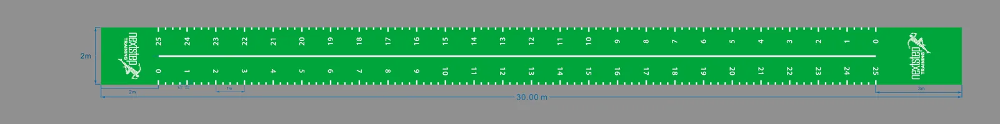
Why a 30m Gym Turf Roll Needs a Handling Plan
The current UMAX commercial gym sled track guide notes that this turf direction can be produced up to 50m, while an individual roll of about 30m or less is normally easier to handle and deliver. This completed project is a real 30m reference, not a recommendation that every facility should order the same length.
Before choosing one long roll, confirm unloading equipment, the number of people available, door and corridor dimensions, turning space and the route to the final floor. A seam-free visual can be valuable, but only if the product can be moved into position safely and accurately.
Finished Production, Woven Logo and Dimension Evidence
Factory photography recorded the completed green custom gym turf after production. The customer branding, number sequences and track markings were machine-woven into the layout. Tape-measure images separately documented the 30m length and 2m width.
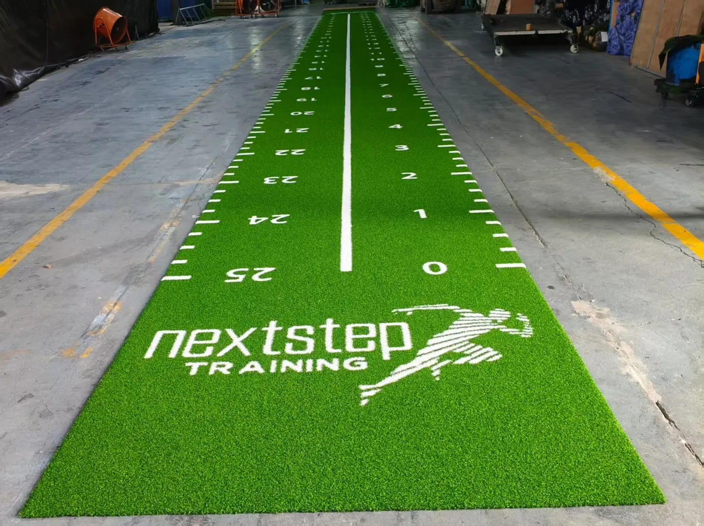
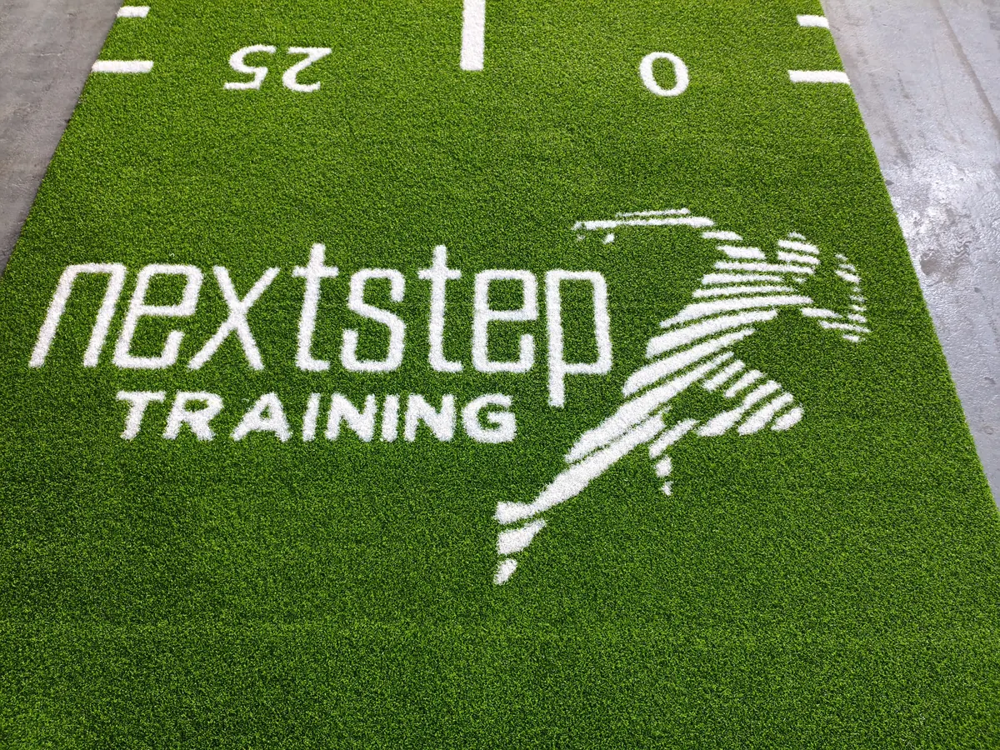
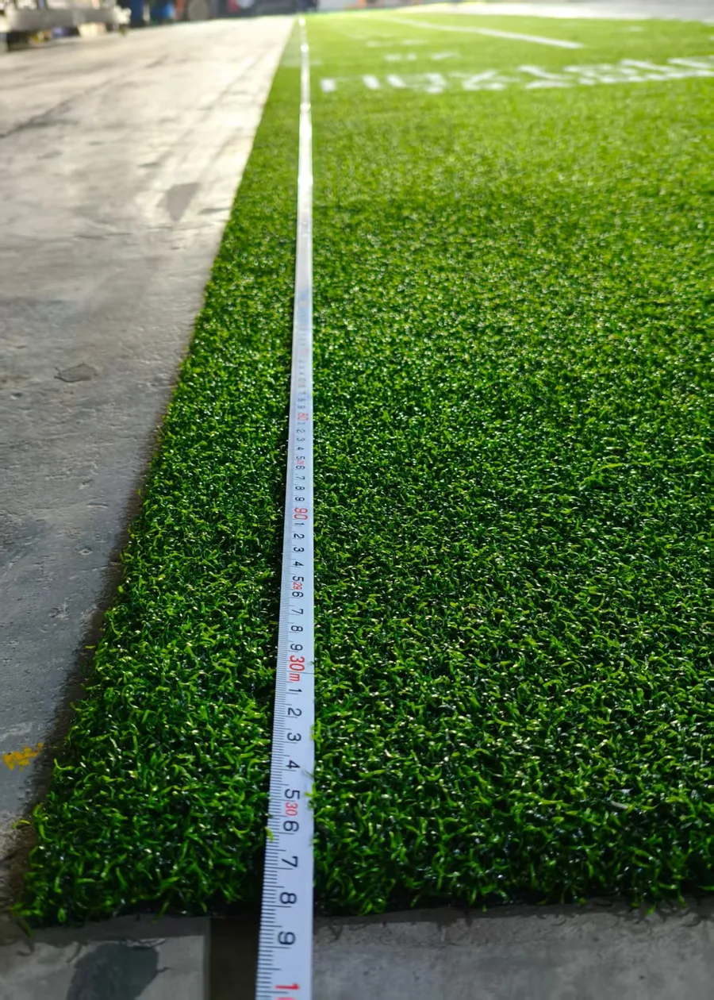
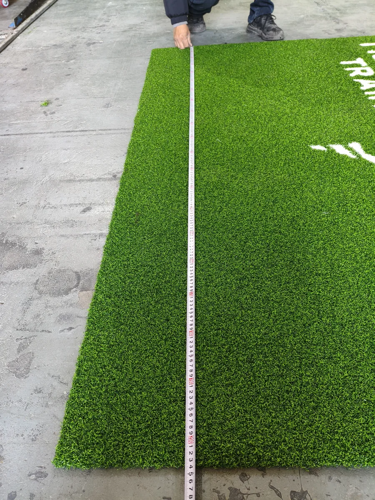
Protective Wrapping and Wooden-Crate Export Packing
The finished turf was rolled and protected before a custom timber structure was built around the shipment. The photograph documents the completed crate construction. This matters for a long custom gym turf roll because packing must support handling while protecting the woven surface and roll shape during export transport.
The crate shown here belongs to this Netherlands shipment. Future packing may use a different crate, pallet or protection method according to roll size, route, trade term and destination requirements.
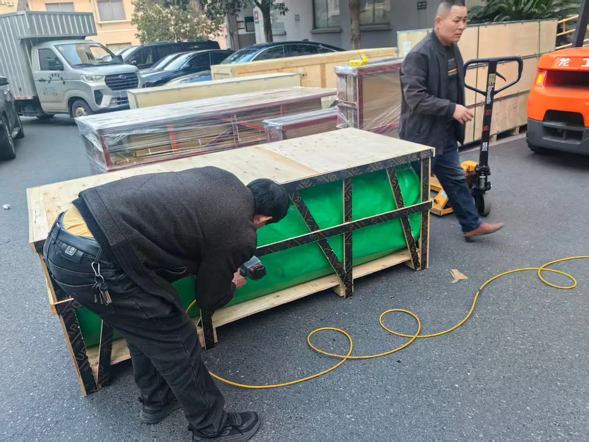
Customer-Managed Floor Preparation and Installation
The buyer photographed the floor before installation and later supplied multiple completed-site views. The green turf now runs through the facility as one long functional training lane, with the number sequences aligned along the room and the woven brand visible at the end.
This project shows that a buyer can manage gym turf installation locally. It does not create a universal installation instruction. The concrete or other substrate must be assessed for flatness, cleanliness, dryness and compatibility with the selected adhesive. The team also needs enough people and equipment to position a long roll without damaging the graphics or edges.
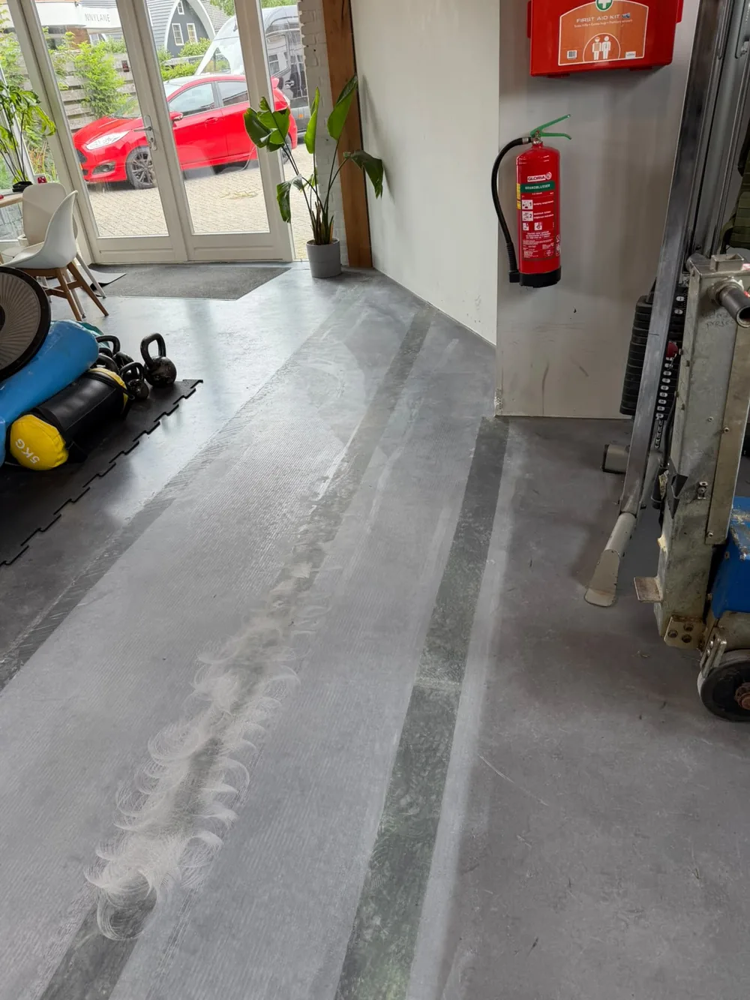
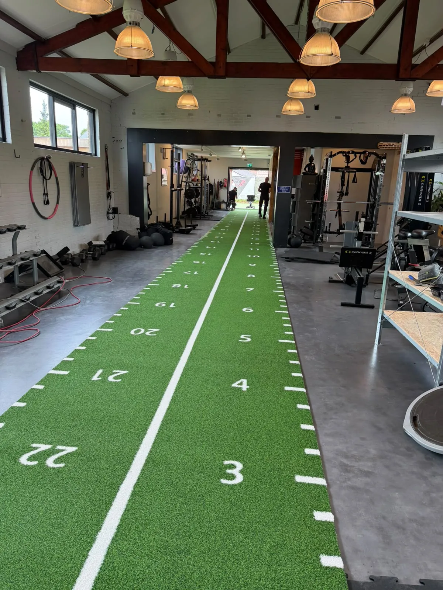
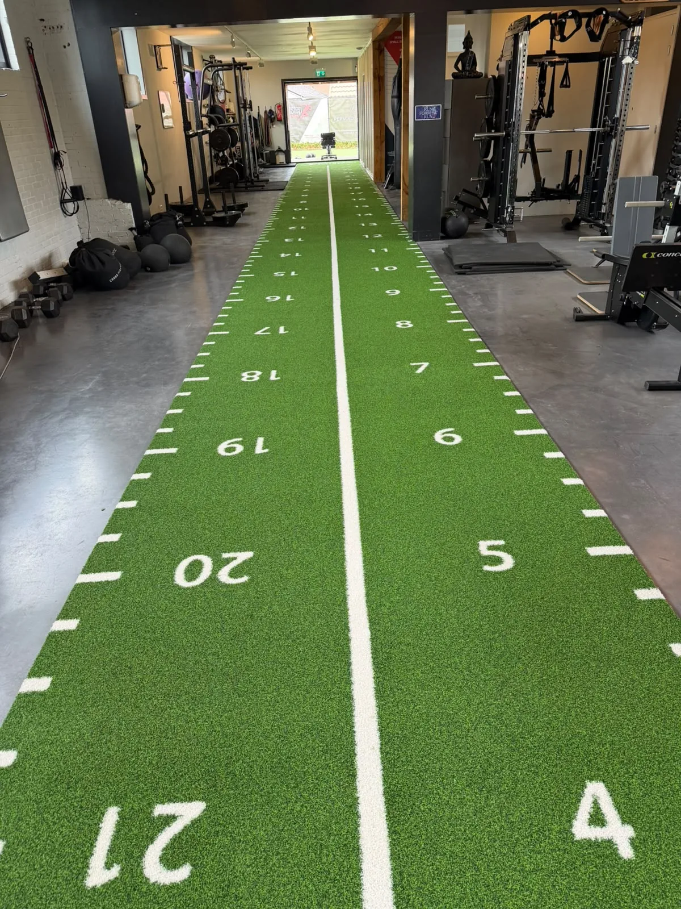
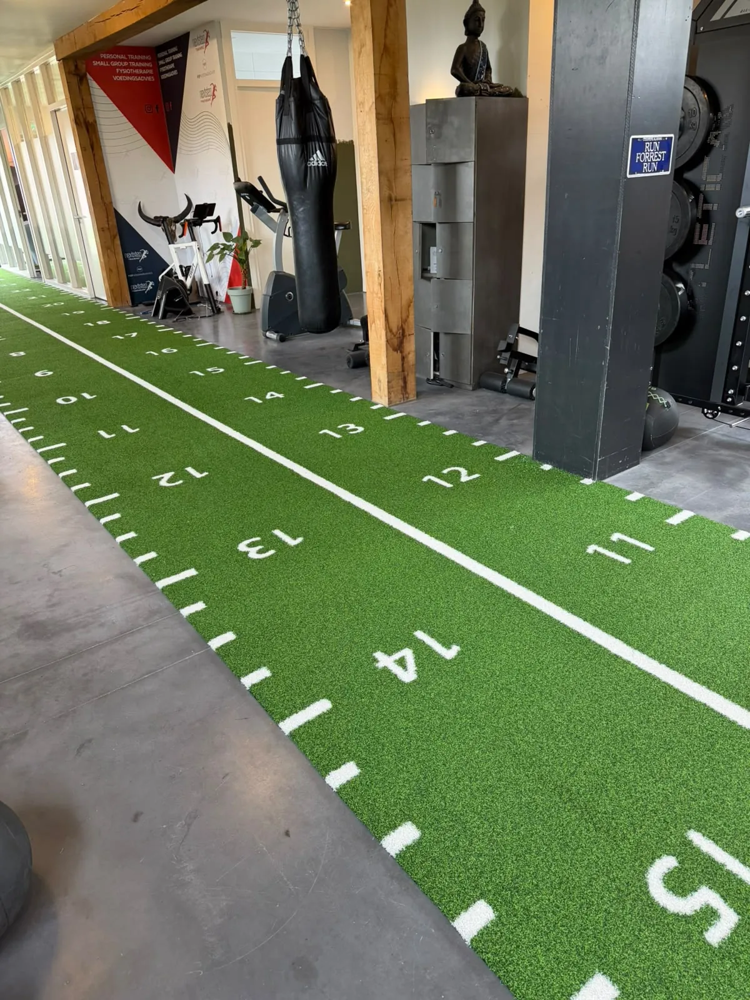
Customer Feedback Across Design, Shipping and Delivery
“She kept informed during the whole process from design, to production, shipping and delivery.”Five-star customer review, Netherlands · displayed with permission
The review connects product quality with the wider custom-order process. The separate customer message also explains that clear communication helped reduce the buyer’s concern about ordering a large custom item online. These materials are presented as project evidence without Review, AggregateRating, Product, Offer, price or stock structured data.
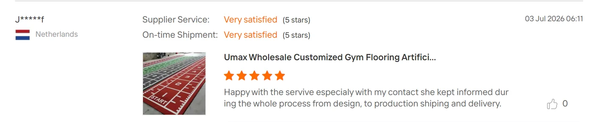
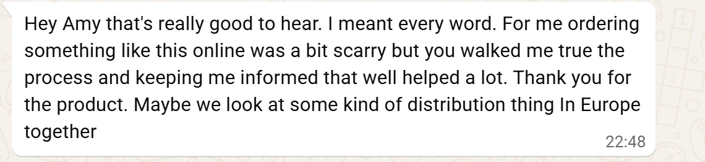
34.5-second customer feedback video with sound. It is requested only after the viewer selects play.
GYMXM15 Reference for the 30m Sled Track
The project follows the UMAX GYMXM15 reference: 100% PE yarn, 5,500 dtex, PP + SBR backing and a nominal original pile height of 15mm. Because the yarn is textured and crimped, relaxed visible height is approximately 10–12mm. The GYMXM15 pile-height guide explains the difference between nominal and visible measurement.
Sled push and sled pull resistance cannot be predicted from pile height alone. Fiber direction, sled feet, load, backing, adhesive, subfloor and maintenance all matter. Test the intended sled on a representative sample when resistance is a critical project requirement.
Ordering Inputs for a Long Custom Gym Track
The Custom Gym Turf product direction accepts one custom unit. A digital mockup is normally prepared within 1–2 business days after the dimensions, graphics, colors and viewing direction are complete. Production timing is confirmed by sales for the actual project rather than promised as a fixed number of days.
For a long numbered training track, send:
- the full room and finished track dimensions;
- door, corridor, lift, unloading and turning restrictions;
- vector logo files and color references;
- the exact numbering direction and start/finish positions;
- subfloor photographs and intended local installation method;
- handling manpower and any available lifting equipment;
- destination and target installation date.
Use the custom turf design process to prepare the artwork inputs, then check roll handling and lane planning in the commercial sled track guide.
Frequently Asked Questions
Can custom gym turf be produced in a 30m length?
This completed Netherlands project measured 30m × 2m. Future lengths remain subject to production, roll weight, packing, transport, building access, manpower and installation confirmation.
How was the 30m gym turf roll packed for export?
For this shipment, the rolled turf received protective wrapping and a custom wooden export crate. Packing is selected around the actual roll, transport route and destination rather than copied from another project.
Can a buyer install custom gym turf locally?
The customer managed installation in this case. Local installation can be practical when the subfloor, adhesive, access route, handling plan and installer capability have been reviewed for the project.
What should be confirmed before ordering a long numbered sled track?
Confirm the finished dimensions, two-direction numbering, logo orientation, roll plan, door and corridor access, unloading equipment, subfloor, local installation method and destination before approving production.
Is 15mm the visible finished height of this gym turf?
The GYMXM15 reference has a nominal original pile height of 15mm. Because the yarn is crimped and textured, the relaxed visible height is approximately 10–12mm and can vary with compression and measurement method.
Compare a Wider Branded Track
The UK case documents a 14m × 3m black custom gym turf track with yellow woven logos, grey boundaries, factory dimension checks and customer installation.
View the UK 14m × 3m Project